Visualizing data is one of the most, if not the most, important part of data science. The right visualization method may reveal problems with the data that can render the results from a standard analysis, although typically appropriate, completely useless. It can also help us make us important discoveries.
We have shown methods for visualizing univariate and paired data, but plots that reveal relationships between columns or between rows are more complicated due to the high dimensionality of data. Creating one single scatter-plot of the data is impossible due to the high dimensionality.
We will describe a powerful techniques for exploratory data analysis based on dimension reduction. The general idea is to reduce the dimension of the dataset while preserving important characteristics, such as the distance between features or observations. With fewer dimensions, visualization then becomes more feasible. The technique behind it all, principal component analysis (PCA), is also useful in other contexts. Before applying PCA to a high-dimensional dataset, we will motivate the ideas behind with a simple example.
We consider an example coming from twin heights. We simulate 100 two-dimensional points that represent the number of standard deviations each individual is from the average height. Each point is a pair of twins:
Simulated twin pair heights.
To help with the illustration, think of this as data of many features with the twin pairs representing the \(N\) observations and the two heights representing two features. For this illustration, we will act as if two is too high dimensional for visualization. We want to reduce the dimensions to 1.
We are interested in the distance between any two samples. We can compute this using dist. For example, here is the distance between the two orange points in the figure above:
d=dist(X)
as.matrix(d)[1,2]## [1] 3.414106Assessment If I center the data by removing the average from both columns, does the distance between pairs of twins change?
We will go ahead a center the data:
X <- sweep(X, 2, colMeans(X))
# Can also do this (advanced): X <- t(t(X) - rowMeans(t(X)))Let’s check to see if “centering” the data makes a difference.
d2 = dist(X)
as.matrix(d2)[1,2]## [1] 3.414106And to see why graphically:
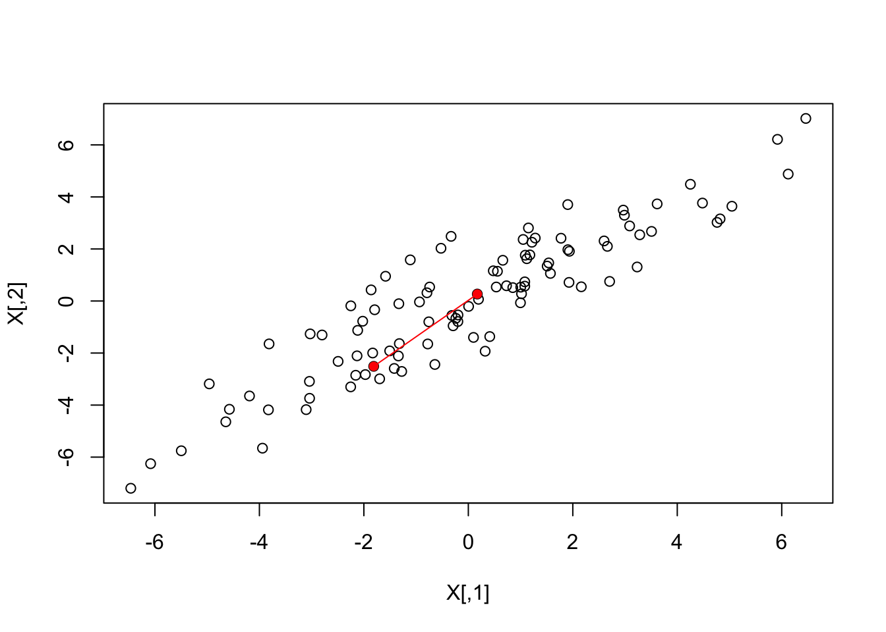
What if making two dimensional plots was too complex and we were only able to make one-dimensional plots. Can we, for example, reduce the data to a one-dimensional matrix that preserves distances between points?
Let’s start with the naive approach of simply removing one of the two dimensions. Let’s compare the actual distances to the distance computed with just one of the dimensions. The plot below shows the comparison to the first dimension (left) and to the second (right):
Z <- X[,1]
mypar(1,2)
plot(dist(X), dist(Z))
abline(0,1)
Z <-X[,2]
plot(dist(X), dist(Z))
abline(0,1)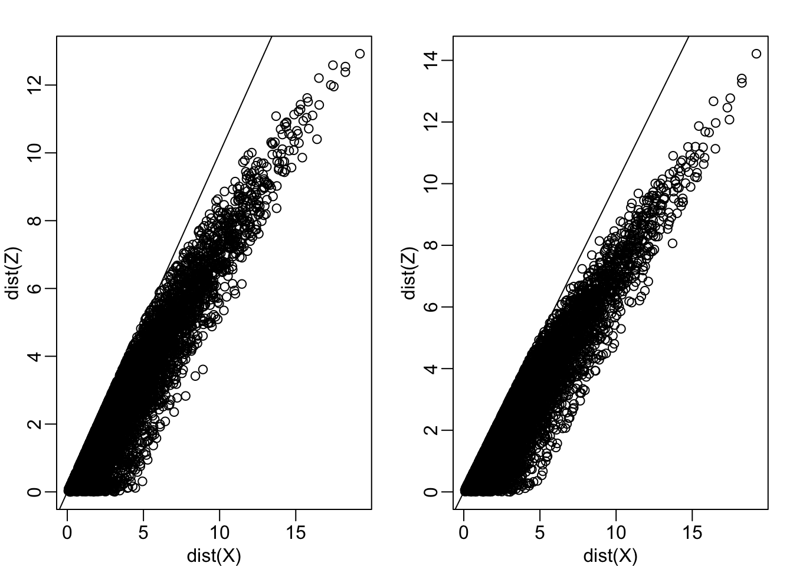
Note that there is a strong correlation between the distances based only on on dimension and two dimensions, but can we improve it? Furthermore, the actual distance is generally underestimated (below the 45° line). This is actually to be expected since we are adding more terms in the actual distance. If instead we average and use this distance:
\[\sqrt{ \frac{1}{2} \sum_{j=1}^2 (X_{i,j}-X_{i,j})^2 }\]
Notice, the bias goes away:
Z <- X[,1]
mypar(1,1)
plot(dist(X)/sqrt(2), dist(Z))
abline(0,1)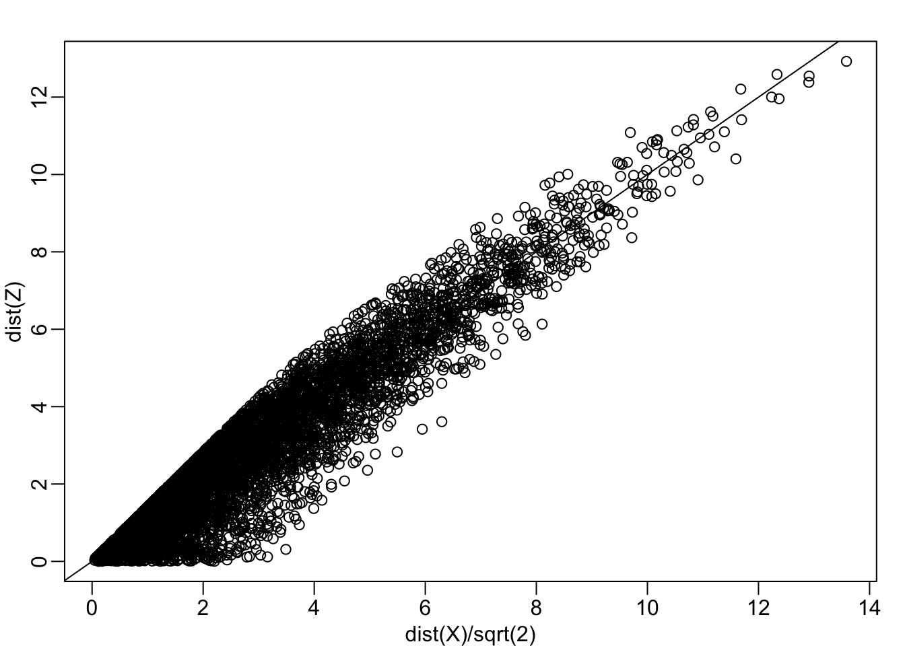
Can we pick a one dimensional summary that makes this correlation even stronger?
cor(dist(X), dist(Z))## [1] 0.9468779If we look back at the plot, and visualize a line between any pair of points, the length of this line is the distance between the two points. These lines tend to go along the direction of the diagonal. Notice what happens when we instead plot the difference and average.
avg <- rowMeans(X) ##or (X[,1] + X[,2])/2
diff <- X[,2] - X[,1]
Z <- cbind( avg, diff)
mypar(1,2)
lim <- lim - 69
plot(X, xlim=lim, ylim=lim)
points(X[1:2,], col="red", pch=16)
lines(X[1:2,], col="red")
plot(Z, xlim=lim, ylim=lim)
points(Z[1:2,], col="red", pch=16)
lines(Z[1:2,], col="red")Twin height scatterplot (left) and MA-plot (right).
This means that we can ignore the second dimension and not lose too much information. If the line is completely flat, we lose no information. If we use this transformation of the data instead we get much higher correlation:
mypar(1,1)
plot(dist(X)/sqrt(2), dist(Z[,1]))
abline(0,1)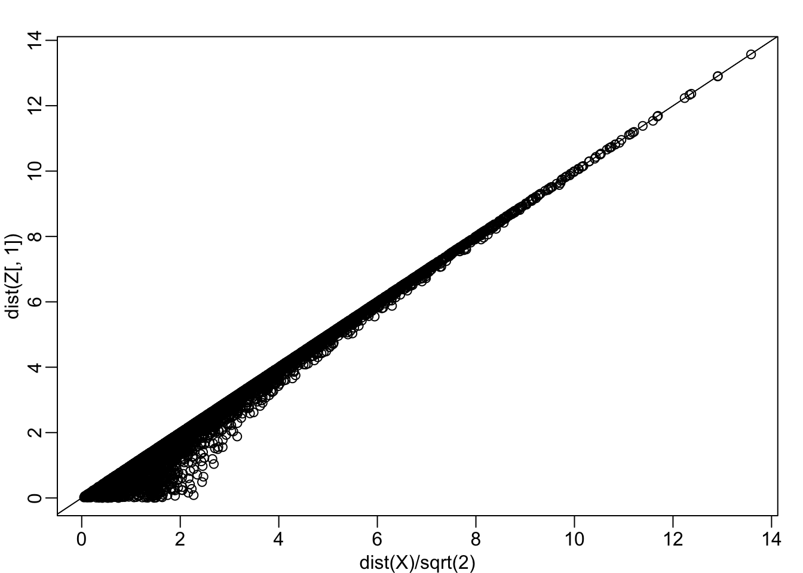
cor(dist(Z[,1]), dist(X)/sqrt(2))## [1] 0.9929372Note that each row of \(X\) was transformed using a linear transformation. For any row \(i\), the first entry was:
\[Z_{i,1} = a_{1,1} X_{i,1} + a_{2,1} X_{i,2}\]
with \(a_{1,1} = 0.5\) and \(a_{2,1} = 0.5\).
The second entry was also a linear transformation:
\[Z_{i,2} = a_{1,2} X_{i,1} + a_{2,2} X_{i,2}\]
with \(a_{1,2} = 1\) and \(a_{2,2} = -1\).
We can also use linear transformation to get \(X\) back from \(Z\):
\[X_{i,1} = b_{1,1} Z_{i,1} + b_{2,1} Z_{i,2}\]
with \(b_{1,2} = 1\) and \(b_{2,1} = 0.5\) and
\[X_{i,2} = b_{2,1} Z_{i,1} + b_{2,2} Z_{i,2}\]
with \(b_{2,1} = 1\) and \(a_{1,2} = -0.5\).
If you are familiar with linear algebra we can write the operation we just performed like this:
\[ Z = Y A \mbox{ with } A = \, \begin{pmatrix} 1/2&1\\ 1/2&-1\\ \end{pmatrix} \]
And can transform back by simply multiplying by \(A^{-1}\) as follows:
\[ Y = Z A^{-1} \mbox{ with } A^{-1} = \, \begin{pmatrix} 1&1\\ 1/21&-1/2\\ \end{pmatrix} \implies \]
Note that we redefined distance above to account for the difference in dimensions. We can actually guarantee that the distance scales remain the same if we re-scale the columns of \(A\) to assure that the sum of squares are 1:
\[a_{1,1}^2 + a_{2,1}^2 = 1\mbox{ and } a_{2,1}^2 + a_{2,2}^2=1\]
and the correlation of the columns is 0:
\[ a_{1,1} a_{1,2} + a_{2,1} a_{2,2} = 0. \]
In this particular example to achieve this, we multiply the first set of coefficients (first column of \(A\)) by \(\sqrt{2}\) and the second by \(1\sqrt{2}\) then we get the same exact distance if we use both dimensions and a great approximation if we use one.
Z[,1] <- (X[,1] + X[,2])/sqrt(2)
Z[,2] <- (X[,2] - X[,1])/sqrt(2)
mypar(1,2)
plot(dist(X), dist(Z) )
abline(0,1)
plot(dist(X), dist(Z[,1]))
abline(0,1)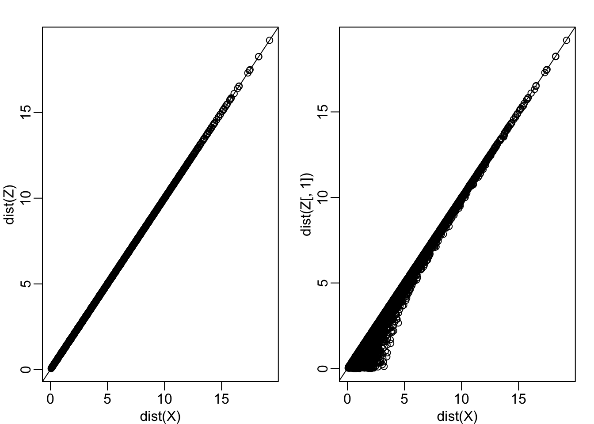
In this case \(Z\) is called an orthogonal rotation of \(X\): it preserves the distances between points.
Note that by using the transformation above we can summarize the distance between any two pair of twins with just on dimension. We reduced the number of dimensions from two to one with very little loss of information.
The reason we were able to do this is because columns of \(X\) were highly correlated:
cor(X[,1], X[,2])## [1] 0.9095129and the transformation produced uncorrelated columns with “independent” information in each column:
cor(Z[,1], Z[,2])## [1] -0.0009943199In the computation above, the total variability in our data can be defined as the sum of squares of the columns. We assume the columns are centered so we have:
\[v_1 = \frac{1}{N}\sum_{i=1}^N X_{i,1}^2 \mbox{ and } v_2 = \frac{1}{N}\sum_{i=1}^N X_{i,1}^2 \]
Which we can compute using:
colMeans(X^2) ## [1] 7.230716 7.224741We can show, mathematically, that if we apply an orthogonal transformation as above, then the total variation remains the same:
sum(colMeans(X^2))## [1] 14.45546sum(colMeans(Z^2))## [1] 14.45546However, while the variability in the columns of X is about the same, in the transformed version \(Z\), 96% of the variability is included in the first dimensions:
v <- colMeans(Z^2)
v/sum(v)## avg diff
## 0.95475639 0.04524361The first principal component (PC) of a matrix \(X\) is the linear orthogonal transformation of \(X\), that maximizes the variability. The function prcomp provides this info:
prcomp(X)## Standard deviations (1, .., p=2):
## [1] 3.7337447 0.8127869
##
## Rotation (n x k) = (2 x 2):
## PC1 PC2
## [1,] 0.7072674 0.7069461
## [2,] 0.7069461 -0.7072674It turns out that we can find this linear transformation not just for two dimensions, but for matrices of any dimension \(p\).
For a multi-dimensional matrix \(X\) with say, \(p\) columns, we can find a transformation that creates \(Z\) that preserves distance between rows, but with the variance of the columns in decreasing order. The second column is the second principal component, the third column is the third principal component etc…
As in our example, if past \(k\) these variances are very small, it means these dimensions have little to contribute to the distance and we can approximate distance between any two points with just \(k\) dimensions.
The Iris data, collected by Anderson in 1935, is a widely used example. It includes four measurments related to three species.
Let’s compute the distance between each observation. You can clearly see the three species:
X <- iris %>% select(-Species) %>% as.matrix()
# This can be written also as
# X <- as.matrix(select(iris,-Species))
d <- dist(X)
image(as.matrix(d))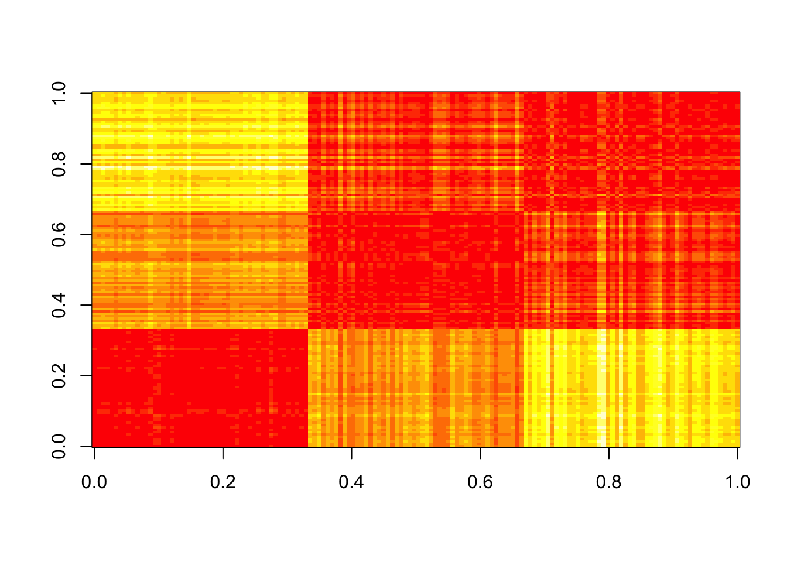
Our predictors here have four dimensions but some are very correlated:
cor(X)## Sepal.Length Sepal.Width Petal.Length Petal.Width
## Sepal.Length 1.0000000 -0.1175698 0.8717538 0.8179411
## Sepal.Width -0.1175698 1.0000000 -0.4284401 -0.3661259
## Petal.Length 0.8717538 -0.4284401 1.0000000 0.9628654
## Petal.Width 0.8179411 -0.3661259 0.9628654 1.0000000If we apply PC we should be able to approximate this distance with just two dimensions:
pc <- prcomp(X)
summary(pc)## Importance of components:
## PC1 PC2 PC3 PC4
## Standard deviation 2.0563 0.49262 0.2797 0.15439
## Proportion of Variance 0.9246 0.05307 0.0171 0.00521
## Cumulative Proportion 0.9246 0.97769 0.9948 1.00000The first two dimensions account for 97%. So we should be able to approximate very well:
d_approx <- dist(pc$x[,1:2])
plot(d, d_approx)
abline(0,1, col=2)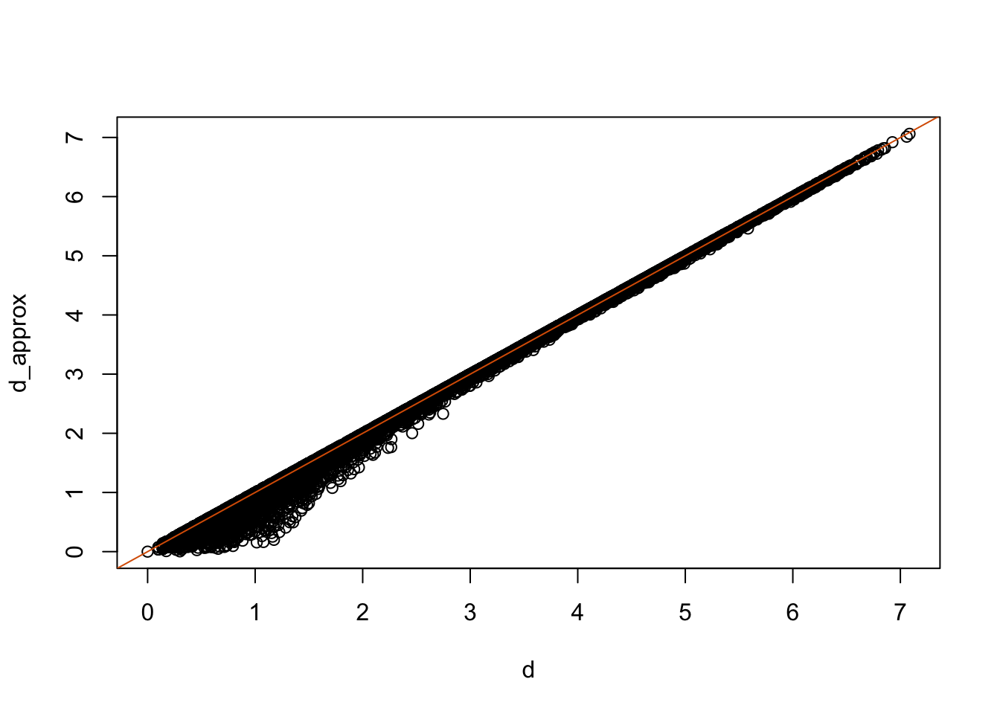
With two dimensions including all the necessary information we are able to visualize the data with a scatterplot:
data.frame(pc$x[,1:2], Species=iris$Species) %>%
ggplot(aes(PC1,PC2, fill = Species))+
geom_point(cex=3, pch=21) +
coord_fixed(ratio = 1)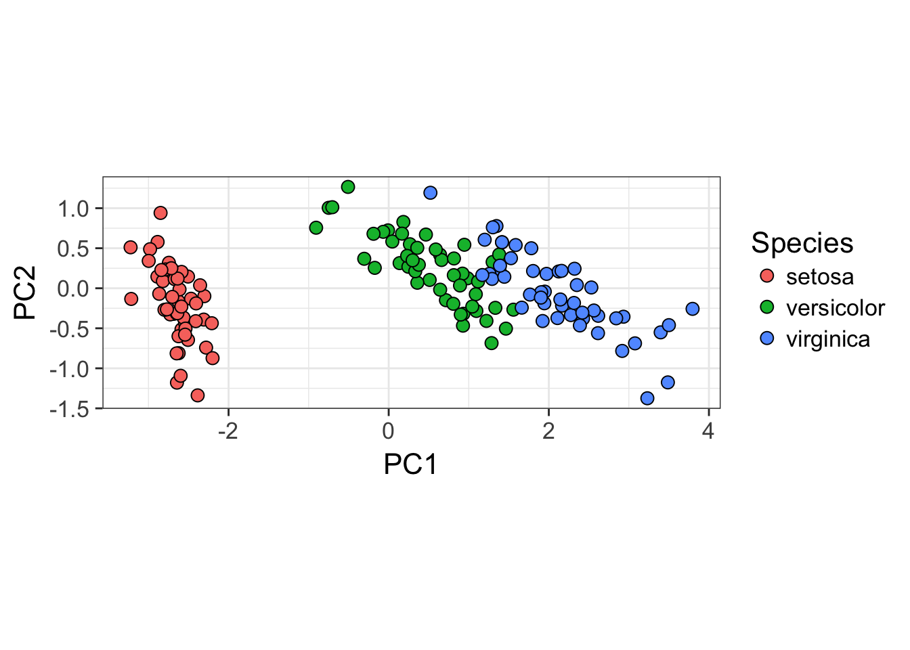
# Can plot something similarly without ggplot:
# plot(pc$x[,1:2],pch=21,bg=iris$Species,cex=2)High-throughput technologies measure thousands of features at a time. Examples of feature are genes, single base locations of the genome, genomic regions, or image pixel intensities. Each specific measurement product is defined by a specific set of features. For example, a specific gene expression microarray product is defined by the set of genes that it measures.
A specific study will typically use one product to make measurements on several experimental units, such as individuals. The most common experimental unit will be the individual, but they can also be defined by other entities, for example different parts of a tumor.
Here we show an example for which we measure RNA expression for 8,793 genes from blood taken from 209 individuals. In this case, the data was originally collected to compare gene expression across ethnic groups. The study is described in this paper, which claimed that roughly 50% of genes where differentially expressed when comparing blood from two ethnic groups.
library(Biobase)
library(GSE5859)
data(GSE5859)
# This messiness is to remove duplicate samples.
# Calculate the correlation matrix
cors <- cor(exprs(e))
# Find which absolute correlations are greater than 0.9999 and remove
Pairs=which(abs(cors)>0.9999, arr.ind = TRUE)
out = Pairs[which(Pairs[,1]<Pairs[,2]), ,drop = FALSE]
if(length(out[,2])>0) e=e[,-out[2]]
## We also remove control probes from the analysis:
out <- grep("AFFX",featureNames(e))
e <- e[-out,]
X <- t(exprs(e) )
# Grab ethnicity and date of processing
eth <- pData(e)$ethnicity
dates <- pData(e)$dateAfter some clean up of the data (code not shown), we end up with a matrix X with individuals represented in rows and genes in columns. We also have the ethnicity of each individual eth and dates in the same order. Now we are ready to proceed.
We have shown how we can compute principal components using prcomp. The coefficients are stored in the rotation component and the transformed data in the x component. Note that the columns are centered by default.
pc <- prcomp(X)We want to explore the distance between each individual and determine if individuals cluster by ethnicity. Can we approximate the distance between two individuals with just two dimensions instead of 8,746?
The proportion of variance of the first two PCs is quite high, almost 30%:
summary(pc)$importance[,1:5]## PC1 PC2 PC3 PC4 PC5
## Standard deviation 14.23377 10.61813 8.969888 6.931216 6.174254
## Proportion of Variance 0.18809 0.10467 0.074690 0.044600 0.035390
## Cumulative Proportion 0.18809 0.29275 0.367450 0.412050 0.447440We can also plot the standard deviations:
plot(pc$sdev)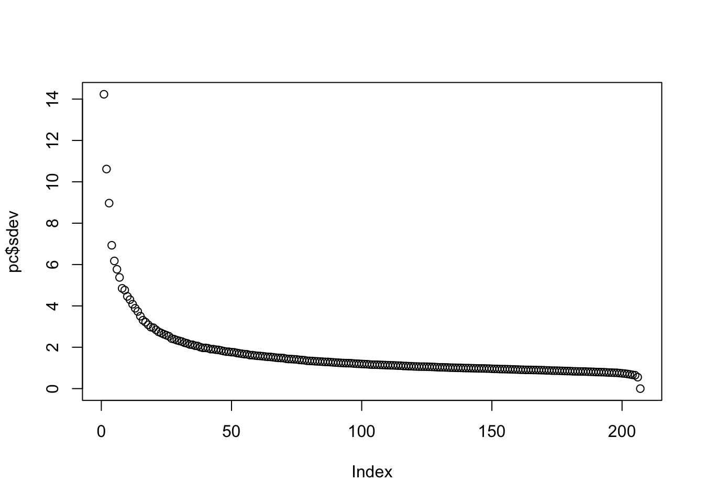
or the more common plot variance explained:
plot(pc$sdev^2/sum(pc$sdev^2))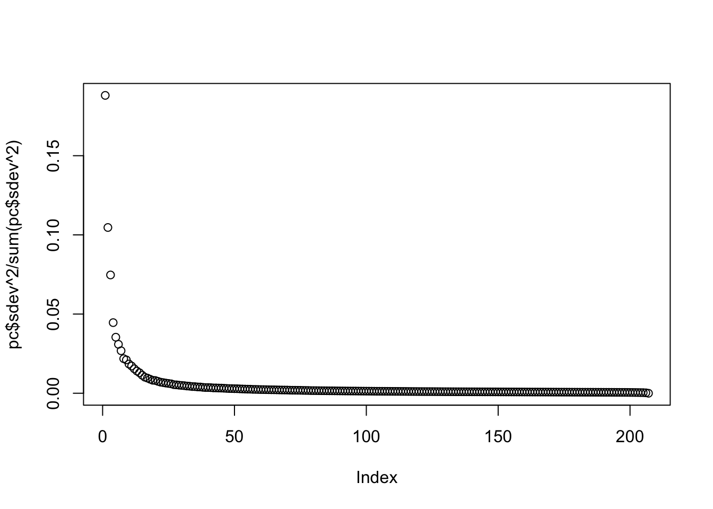
We can see that the first two PCs will in fact be quite informative. Here is a plot of the first two PCs:
mypar(1,1)
plot(pc$x[,1:2], bg=eth, pch=21)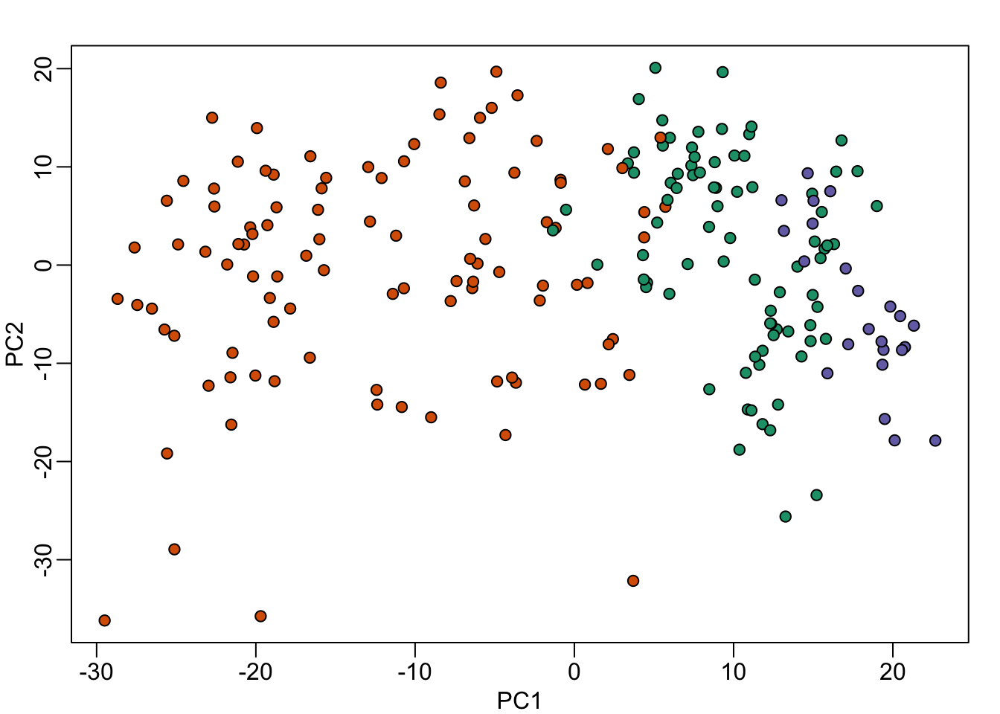
Note that it does in fact separate individuals by ethnicity. However, this visualization does illustrate a concerning characteristic: the orange points seem to have sub-clusters. What are these?
It turns the date in which the samples were processed also explain the clusters:
mypar(1,1)
year = factor(format(dates,"%y"))
plot( pc$x[,1:2], bg=year, pch=21)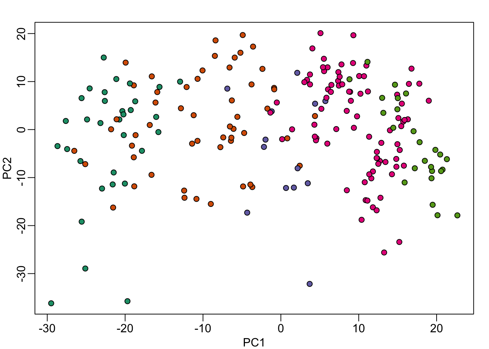
When we look more closely, at months for example:
month = factor(format(dates,"%y%m"))
data.frame( month, PC1 = pc$x[,1], eth = eth) %>% ggplot() +
geom_boxplot(aes(month, PC1)) +
geom_jitter(aes(month, PC1, fill=eth), width=0.2, cex=2, pch=21) +
theme(axis.text.x = element_text(angle = 90, hjust = 1))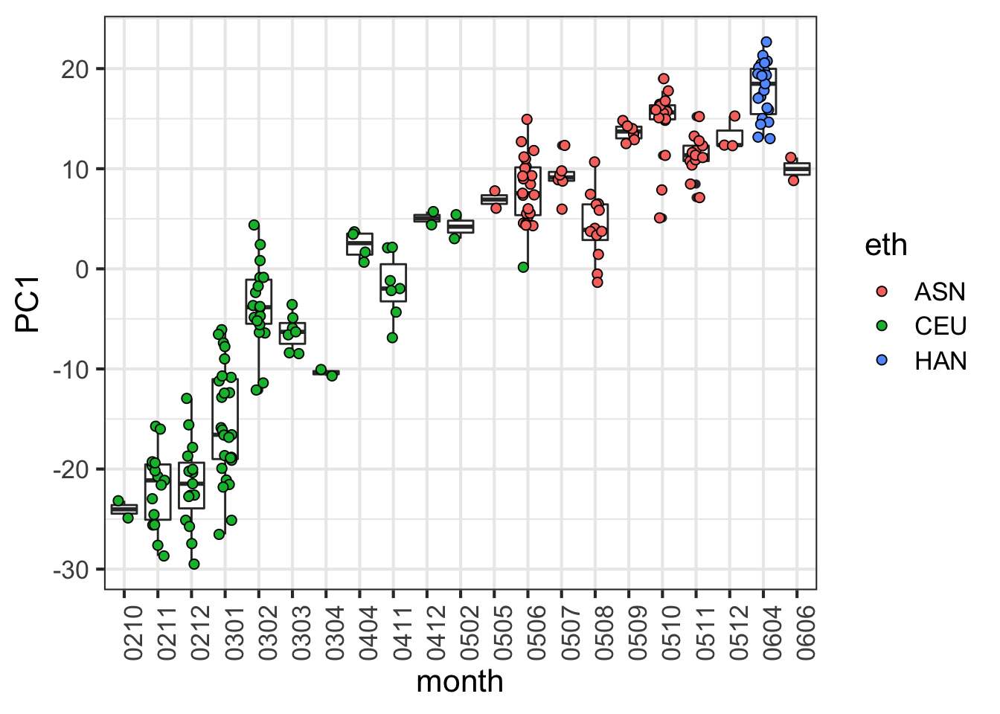
# This can be done with base R - without ggplot:
# df = data.frame( month, PC1 = pc$x[,1], eth = eth)
# boxplot(PC1~month,data=df,las=2)
# stripchart(PC1 ~ month, vertical = TRUE, data = df,method = "jitter", add = TRUE, pch = 21,bg=eth)